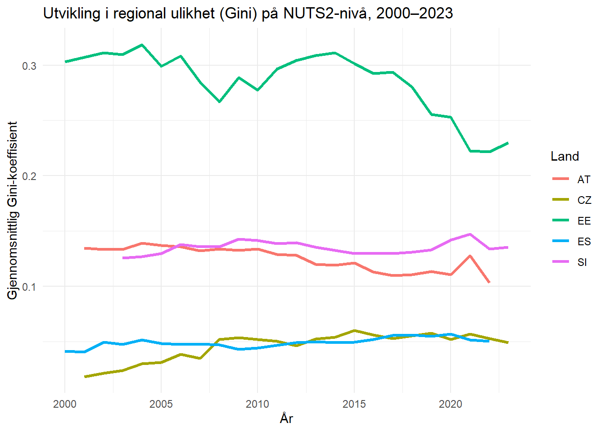
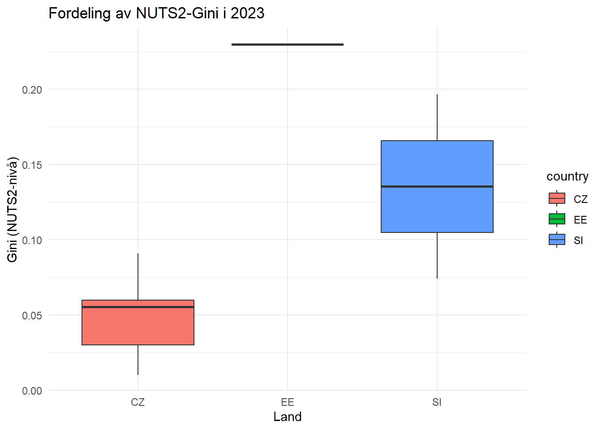

Code
1 + 1[1] 2Quarto enables you to weave together content and executable code into a finished document. To learn more about Quarto see https://quarto.org.
When you click the Render button a document will be generated that includes both content and the output of embedded code. You can embed code like this:
1 + 1[1] 2You can add options to executable code like this
[1] 4# Henter og forbereder Eurostat-data (base R – robust, bruker TIME_PERIOD)
library(eurostat)
# Parametre ----
min_year <- 2000
max_year <- 2023
countries <- c("ES", "AT", "CZ", "SI", "EE")
## --- 1) GDP NUTS3 (MIO_EUR) ---
gdp_all <- get_eurostat("nama_10r_3gdp", time_format = "num")
gdp_all$geo <- as.character(gdp_all$geo)
gdp_all$country <- substr(gdp_all$geo, 1, 2)
gdp_all$time <- as.numeric(gdp_all$TIME_PERIOD) # viktig kolonne!
keep_gdp <- gdp_all$unit == "MIO_EUR" &
nchar(gdp_all$geo) == 5 &
gdp_all$country %in% countries &
gdp_all$time >= min_year & gdp_all$time <= max_year
gdp_raw <- gdp_all[keep_gdp, c("geo","country","time","values")]
names(gdp_raw)[names(gdp_raw)=="values"] <- "GDP_MEUR"
gdp_raw$GDP_MEUR <- as.numeric(gdp_raw$GDP_MEUR)
## --- 2) Befolkning NUTS3 (TOTAL, NR) ---
pop_all <- get_eurostat("demo_r_pjanaggr3", time_format = "num")
pop_all$geo <- as.character(pop_all$geo)
pop_all$country <- substr(pop_all$geo, 1, 2)
pop_all$time <- as.numeric(pop_all$TIME_PERIOD)
keep_pop <- pop_all$sex == "T" &
pop_all$age == "TOTAL" &
pop_all$unit == "NR" &
nchar(pop_all$geo) == 5 &
pop_all$country %in% countries &
pop_all$time >= min_year & pop_all$time <= max_year
pop_raw <- pop_all[keep_pop, c("geo","country","time","values")]
names(pop_raw)[names(pop_raw)=="values"] <- "Population"
pop_raw$Population <- as.numeric(pop_raw$Population)
## --- 3) Slå sammen og beregn GDP per capita (EUR per person) ---
data_combined <- merge(gdp_raw, pop_raw, by = c("geo","country","time"), all = FALSE)
data_combined$GDP_per_capita <- (data_combined$GDP_MEUR * 1e6) / data_combined$Population
## --- 4) Forhåndsvisning ---
head(data_combined) geo country time GDP_MEUR Population GDP_per_capita
1 AT111 AT 2001 611.18 37732 16197.92
2 AT111 AT 2002 599.99 37778 15881.99
3 AT111 AT 2003 636.09 37703 16871.07
4 AT111 AT 2004 644.43 37640 17120.88
5 AT111 AT 2005 665.23 37522 17729.07
6 AT111 AT 2006 703.15 37413 18794.27#| label: sanity_check
dim(data_combined) # rader og kolonner dplyr::count(data_combined, country) # rader per land head(data_combined) # de første radene
# Henter Eurostat-data og lager datasettet "data_combined"
library(eurostat)
library(dplyr)
library(tidyr)
# --- Parametre ---
min_year <- 2000
max_year <- 2023
countries <- c("ES", "AT", "CZ", "SI", "EE")
# --- 1. Hent BNP-data (MIO_EUR) ---
gdp_all <- get_eurostat("nama_10r_3gdp", time_format = "num")
gdp_raw <- gdp_all %>%
mutate(
geo = as.character(geo),
country = substr(geo, 1, 2),
time = as.numeric(TIME_PERIOD)
) %>%
filter(
unit == "MIO_EUR",
nchar(geo) == 5,
country %in% countries,
time >= min_year & time <= max_year
) %>%
transmute(geo, country, time, GDP_MEUR = as.numeric(values))
# --- 2. Hent befolkning (TOTAL, NR) ---
pop_all <- get_eurostat("demo_r_pjanaggr3", time_format = "num")
pop_raw <- pop_all %>%
mutate(
geo = as.character(geo),
country = substr(geo, 1, 2),
time = as.numeric(TIME_PERIOD)
) %>%
filter(
sex == "T",
age == "TOTAL",
unit == "NR",
nchar(geo) == 5,
country %in% countries,
time >= min_year & time <= max_year
) %>%
transmute(geo, country, time, Population = as.numeric(values))
# --- 3. Slå sammen og beregn BNP per innbygger ---
data_combined <- gdp_raw %>%
left_join(pop_raw, by = dplyr::join_by(geo, country, time)) %>%
mutate(
GDP_per_capita = (GDP_MEUR * 1e6) / Population
) %>%
tidyr::drop_na()
# --- 4. Sjekk datastruktur ---
dim(data_combined) # antall rader og kolonner[1] 2763 6head(data_combined) # vis de første radene# A tibble: 6 × 6
geo country time GDP_MEUR Population GDP_per_capita
<chr> <chr> <dbl> <dbl> <dbl> <dbl>
1 AT111 AT 2001 611. 37732 16198.
2 AT111 AT 2002 600. 37778 15882.
3 AT111 AT 2003 636. 37703 16871.
4 AT111 AT 2004 644. 37640 17121.
5 AT111 AT 2005 665. 37522 17729.
6 AT111 AT 2006 703. 37413 18794.names(data_combined) # vis kolonnenavn[1] "geo" "country" "time" "GDP_MEUR"
[5] "Population" "GDP_per_capita"#| label: gini_nuts2_robust
# Robust Gini (DescTools) per land × NUTS2 × år
if (!requireNamespace("DescTools", quietly = TRUE)) install.packages("DescTools")
library(dplyr); library(purrr); library(ggplot2); library(DescTools)
stopifnot(exists("data_combined")) # vakt: må finnes
gini_weighted_safe <- function(x, w){
x <- as.numeric(x); w <- as.numeric(w)
ok <- is.finite(x) & is.finite(w) & w > 0
if (sum(ok) < 2) return(NA_real_)
as.numeric(DescTools::Gini(x[ok], weights = w[ok], na.rm = TRUE))
}
data_nuts2 <- data_combined %>%
transmute(
country,
NUTS2 = substr(geo, 1, 4),
time = as.integer(time),
GDP_per_capita = as.numeric(GDP_per_capita),
Population = as.numeric(Population)
) %>%
filter(is.finite(GDP_per_capita), is.finite(Population), Population > 0)
gini_nuts2_year <- data_nuts2 %>%
group_by(country, NUTS2, time) %>%
group_split() %>%
purrr::map_dfr(\(df) tibble(
country = df$country[1],
NUTS2 = df$NUTS2[1],
time = df$time[1],
n_regions = nrow(df),
gini_pw = gini_weighted_safe(df$GDP_per_capita, df$Population)
))
head(gini_nuts2_year)
avg_gini_country <- gini_nuts2_year %>%
group_by(country, time) %>%
summarise(mean_gini = mean(gini_pw, na.rm = TRUE), .groups = "drop")
ggplot(avg_gini_country, aes(time, mean_gini, color = country)) +
geom_line(linewidth = 1.1) +
labs(title = "Utvikling i regional ulikhet (Gini) på NUTS2-nivå, 2000–2023",
x = "År", y = "Gj.sn. Gini", color = "Land") +
theme_minimal()
# Pakker
library(dplyr)
library(ggplot2)
library(DescTools)
library(purrr)
# --- 1. Trygg Gini-funksjon ---
gini_weighted_safe <- function(x, weights = NULL) {
tryCatch({
out <- DescTools::Gini(x, weights = weights, na.rm = TRUE)
as.numeric(out)
}, error = function(e) NA_real_)
}
# --- 2. Legg til NUTS2 basert på NUTS3 ---
data_nuts2 <- data_combined %>%
mutate(NUTS2 = substr(geo, 1, 4))
# --- 3. Beregn Gini for hver NUTS2-region per år ---
gini_nuts2_year <- data_nuts2 %>%
group_by(country, NUTS2, time) %>%
summarise(
n_regions = n(),
gini_pw = gini_weighted_safe(GDP_per_capita, weights = Population),
.groups = "drop"
)
head(gini_nuts2_year)# A tibble: 6 × 5
country NUTS2 time n_regions gini_pw
<chr> <chr> <dbl> <int> <dbl>
1 AT AT11 2001 3 0.0413
2 AT AT11 2002 3 0.0538
3 AT AT11 2003 3 0.0562
4 AT AT11 2004 3 0.0850
5 AT AT11 2005 3 0.0777
6 AT AT11 2006 3 0.0879# --- 4. Gjennomsnittlig Gini per land og år ---
avg_gini_country <- gini_nuts2_year %>%
group_by(country, time) %>%
summarise(mean_gini = mean(gini_pw, na.rm = TRUE), .groups = "drop")
# --- 5. Plot utviklingen over tid ---
ggplot(avg_gini_country, aes(x = time, y = mean_gini, color = country)) +
geom_line(linewidth = 1.1) +
labs(
title = "Utvikling i regional ulikhet (Gini) på NUTS2-nivå, 2000–2023",
x = "År",
y = "Gjennomsnittlig Gini-koeffisient",
color = "Land"
) +
theme_minimal()
# --- 6. Fordeling i siste tilgjengelige år ---
latest_year <- max(gini_nuts2_year$time, na.rm = TRUE)
ggplot(filter(gini_nuts2_year, time == latest_year),
aes(x = country, y = gini_pw, fill = country)) +
geom_boxplot(outlier.alpha = 0.3) +
labs(
title = paste0("Fordeling av NUTS2-Gini i ", latest_year),
x = "Land",
y = "Gini (NUTS2-nivå)"
) +
theme_minimal()
Results and Overview The calculated Gini coefficients describe the degree of economic inequality between NUTS3 regions within each country. Across the five selected countries — Spain (ES), Austria (AT), Czechia (CZ), Slovenia (SI) and Estonia (EE) — the values generally range between 0.10 and 0.30. These levels indicate moderate regional inequality: not extreme, yet showing clear differences in economic prosperity across regions. Austria and Spain exhibit the highest average Gini values, while Estonia and Slovenia remain at the lower end of the spectrum.
Temporal Development The time-series plots reveal distinct national trajectories. Between 2000 and 2008, regional disparities decreased slightly in most countries, reflecting the economic convergence period following EU enlargement. Around 2009–2012, the financial crisis caused temporary divergence, particularly in Spain, where regional unemployment and uneven recovery led to a peak in Gini values. In contrast, Slovenia and Estonia maintained relatively stable and low inequality levels during the same period.
Cross-Country Comparison Austria’s higher regional inequality can be attributed to strong concentration of economic activity around Vienna and other urban centers, contrasted with less dynamic alpine and rural regions. Spain shows a similar pattern, where prosperous metropolitan regions such as Madrid, Catalonia, and the Basque Country coexist with less developed southern and inland areas. The Czech Republic’s values lie in the mid-range, reflecting differences between Prague and industrial regions in the east. Slovenia and Estonia display smaller regional gaps, largely due to their smaller geographical size, more homogeneous populations, and centralized economic structures.
Interpretation and Implications The results indicate that even within economically integrated EU member states, sub-national disparities persist. The observed variations in Gini coefficients reflect not only differences in industrial specialization and urbanization but also the effectiveness of national and regional development policies. Countries with strong regional governance and redistributive mechanisms, such as Slovenia, tend to maintain more balanced economic outcomes.
From a policy perspective, high or increasing regional inequality suggests the need for targeted investment in infrastructure, education, and innovation outside the dominant urban centers. In Spain, for instance, cohesion policies could aim to strengthen peripheral regions to reduce the economic dependency on a few major hubs. In Austria, policies promoting connectivity between Vienna and surrounding regions may help foster more even growth.
Conclusion Overall, the Gini analysis highlights how spatial economic inequality varies significantly across Europe. The differences observed here underline the importance of continuous monitoring of regional data and of maintaining cohesion policies at both national and EU levels. While convergence has occurred to some extent, the persistence of inequality at the sub-national level remains a structural feature of the European economy.
This report was prepared with assistance from AI tools. The primary tool used was ChatGPT (GPT-5, OpenAI), which was applied to support the technical and linguistic parts of the work.
The model was used to: - clarify the assignment instructions and interpret data requirements from Eurostat;
- assist in writing R code, including data cleaning, merging, and calculation of GDP per capita and Gini coefficients;
- generate explanations of statistical methods and visualization choices;
- provide suggestions for structure and wording in the discussion section.
All numerical results and figures were generated locally in RStudio using R version 4.5.1 and the Quarto framework.
The AI system did not access the datasets directly nor execute code on its own.
The final code, outputs, and interpretations were verified manually by the author before submission.
This documentation follows HVL’s guidelines for responsible use of AI in academic work.